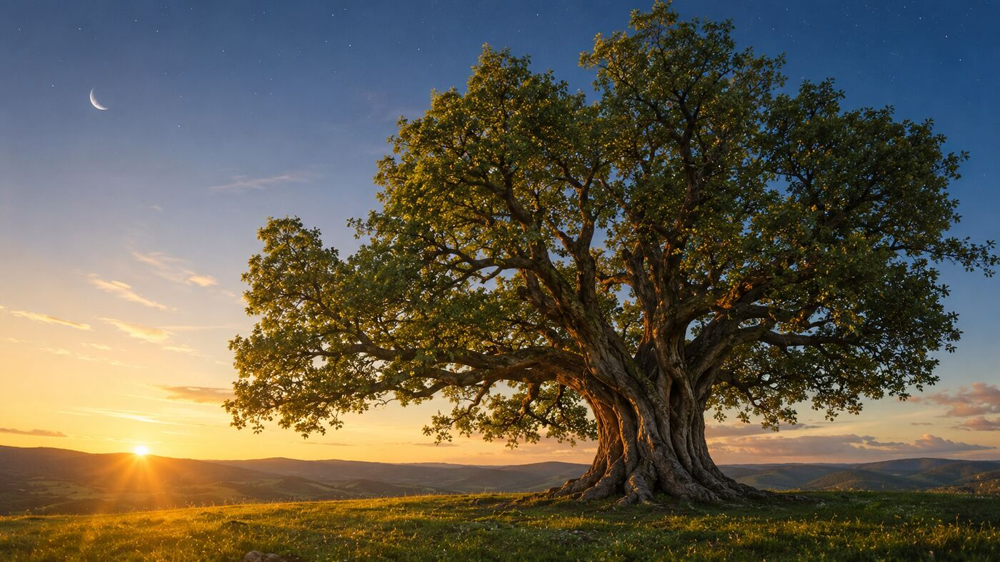
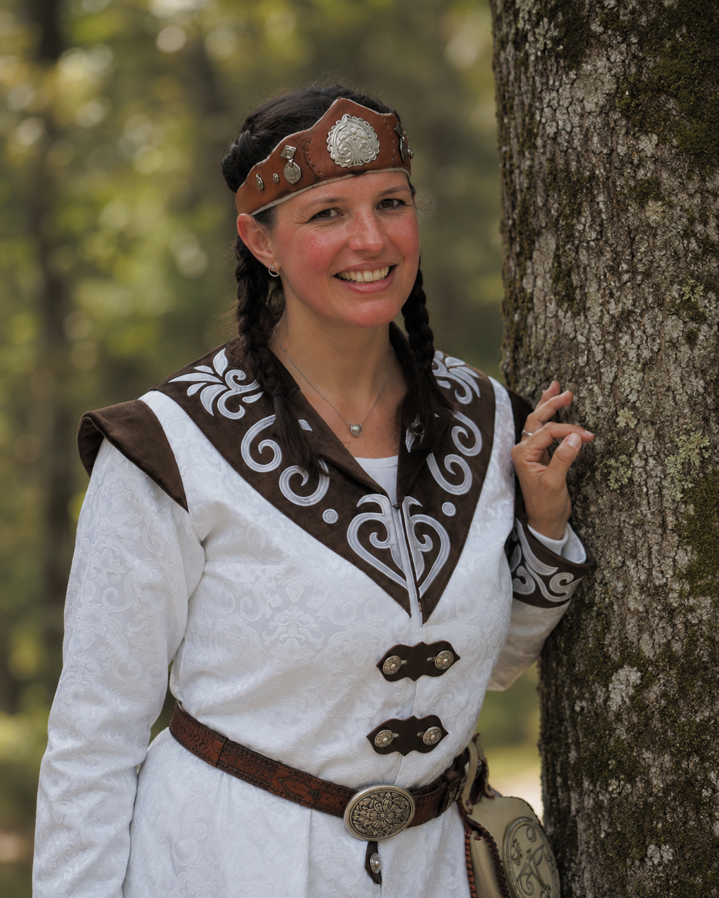
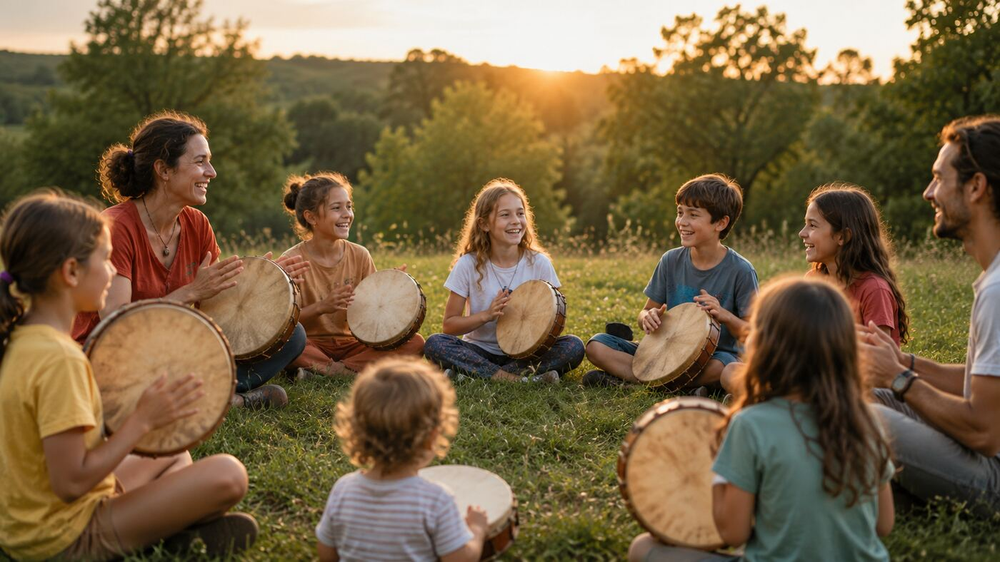
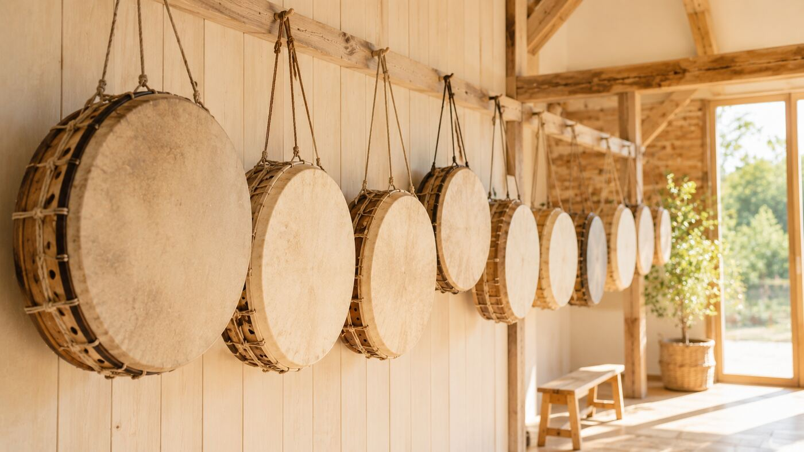
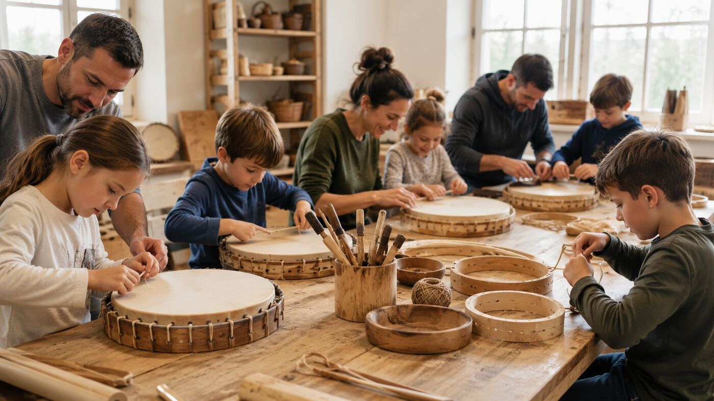
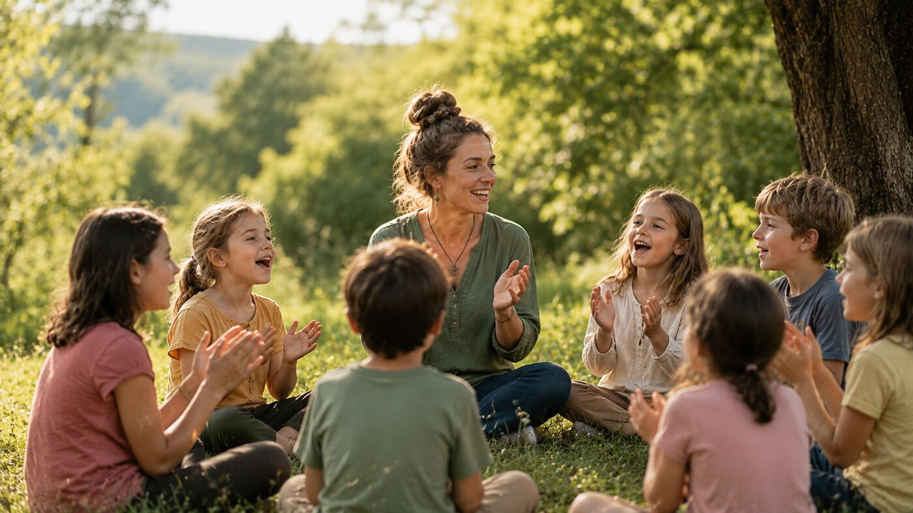
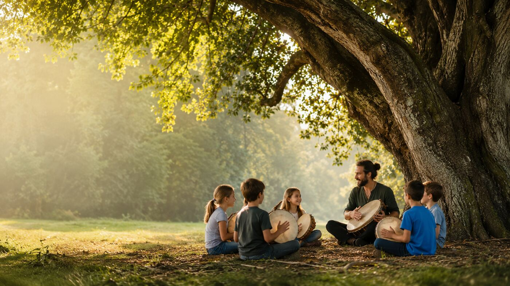
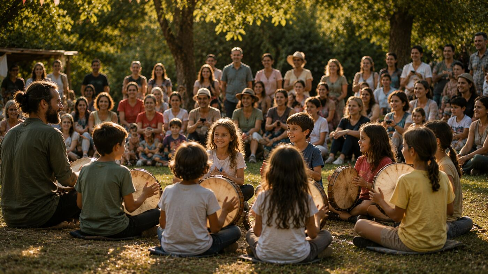

Minden dobbanás
egy történetet
mesél.
A Világfa Sárkányai játékos, élményalapú utat nyit a magyar néphagyományba — közös dobolással, népi ritmusokkal és a táltos-világ meséivel.
Görgess
A Világfa Sárkányai játékos, élményalapú utat nyit a magyar néphagyományba — közös dobolással, népi ritmusokkal és a táltos-világ meséivel.
A magyar néphagyomány egyik legősibb szimbóluma a Világfa. A mesék sárkánya pedig nem ellenfél — a természet erejének, a bátorságnak és az őrzésnek a jelképe. A Világfa Sárkányai azok a gyermekek, akik közösen őrzik hagyományainkat, miközben saját közösséget építenek.
Őseink öröksége, a táltos-világkép, a népi hagyomány tartja és táplálja az egészet.
Mi, akik ma élünk, és tovább visszük a ritmust, a zenét, a közösséget.
A gyermekek, akik új ágakat növesztenek, saját élményeikkel gazdagítva a hagyományt.


A foglalkozásokat Hupczik Andrea, a Táltos Dob bécsi csapatának szakmai vezetője tartja. Évek óta adja át a magyar néphagyomány, a népi ritmusok és a táltos-világ szeretetét — meséken, közös doboláson és éneklésen keresztül. Nála nincs lexikális magolás: minden hónapban egy-egy történelmi vagy néprajzi témát járunk körül játékosan — kik voltak a táltosok, mit jelképez a Világfa, miért fontos a Nap, a Hold és a Csillagok.


A foglalkozásokon kézzel készített, természetes bőrből és fából való dobokat használunk — mindegyik egyedi méretű, egyedi hangú. A gyerekek hamar megtanulják, melyik dob szól hozzájuk a legjobban.
A foglalkozások során játékosan ismerkedünk meg a dob alaptechnikáival, népi ritmusokkal és énekekkel.
Magyar népi ritmusok, a dob alaptechnikái, hallás- és ritmusérzék-fejlesztés közös dobolással.
Népdalok, egyszerű tánclépések, népi játékok — a test és a hang összhangja.
Csapatmunka, egymásra figyelés, és fokozatosan épülő színpadi magabiztosság.
Mit jelképez a sárkány a magyar népmesékben? Bátorság, erő és őrzés — nem ellenfél.
A gyermekek saját dobot készítenek természetes alapanyagokból, szakmai segítséggel. A saját készítésű hangszer különleges élményt jelent, amelyet egész évben magukkal hoznak a foglalkozásokra.

A dobok természetes anyagokból készülnek, ősi technikával: feszített bőr, hajlított fakeret, kézi kötés. Ez nem csak hangzásban más — a gyerekek megtapasztalják, milyen egy igazi, kézzel formált hangszer.
Egy dob körül ülve megszűnnek a különbségek. A gyermekek megtanulják figyelni egymást, együtt alkotni, együtt örülni.

A dob mellett az éneklés és a taps ugyanolyan fontos része a foglalkozásnak. Közös népdalok, ritmusos mondák, és a nevetés — mert a tanulás itt mindig örömmel kezdődik.
Tíz hónap, tíz téma — a nyitó dobolástól az évzáró családi ünnepségig.

A program a www.taltosdob.hu bécsi csapata és a Bécsi Magyar Iskola közös együttműködésében jön létre.
Kérdés esetén a +43 677 616 555 92-es telefonszámot lehet hívni napközben 9 és 16 óra között, vagy írni a marketing@kozpontiszovetseg.at e-mail címre.

Júniusban a családok és barátok körében mutatják be a gyerekek, mit tanultak az év során. Közös dobolás, közös éneklés, és egy oklevél — nem versenyként, hanem ünnepként.
Kinek ajánljuk, milyen ütemben zajlanak a foglalkozások, és mi van a részvételi díjban.
Előzetes zenei tudás nem szükséges. Nem versenyeztetünk, nem vizsgáztatunk — a gyermekek saját tempójukban fejlődnek.
Egy foglalkozás időtartama körülbelül 2–2,5 óra.
A dobkészítő nap külön díjas program, részleteit a jelentkezők számára később tesszük közzé.
Szeptemberben nyílt bemutató foglalkozással várjuk a családokat a Bécsi Magyar Iskolában — ismerkedés, ritmusjátékok, az első közös dobolás.